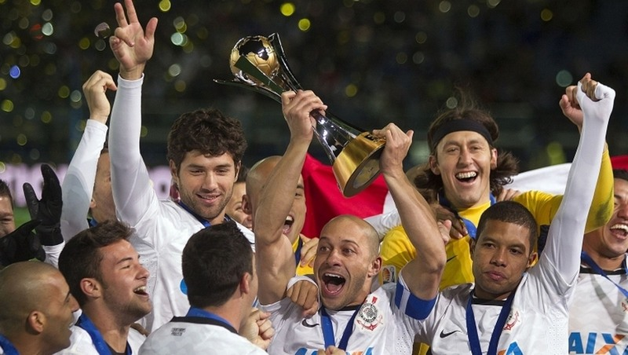

As maiores conquistas do Time do Povo
Ao longo de sua história, o Corinthians conquistou títulos importantes no Brasil e no mundo. Cada taça representa raça, superação e a paixão de milhões de torcedores.
Títulos Internacionais
O Corinthians é reconhecido mundialmente por suas conquistas internacionais, sendo um dos clubes brasileiros mais respeitados no cenário global.
- 🏆 Mundial de Clubes – 2000 e 2012
- 🏆 Copa Libertadores da América – 2012
- 🏆 Recopa Sul-Americana – 2013
Títulos Nacionais 🇧🇷
No cenário nacional, o Corinthians é um dos clubes mais vitoriosos do Brasil, com títulos conquistados em diferentes gerações.
- 🏆 Campeonato Brasileiro – 7 títulos
- 🏆 Copa do Brasil – 4 títulos
- 🏆 Supercopa do Brasil – 1 título
Títulos Estaduais
No Campeonato Paulista, o Corinthians construiu uma história de tradição e rivalidade, sendo um dos maiores campeões do estado.
- 🏆Campeonato Paulista – 31 títulos
- 🏆 Torneios estaduais históricos